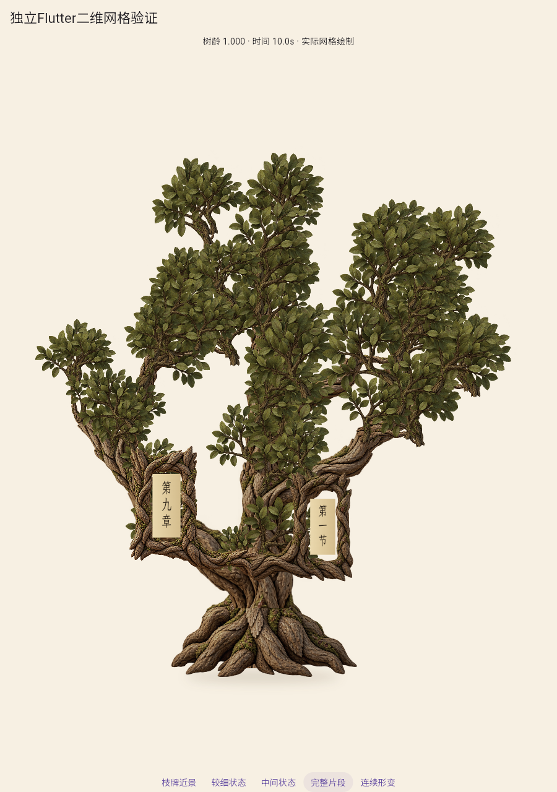
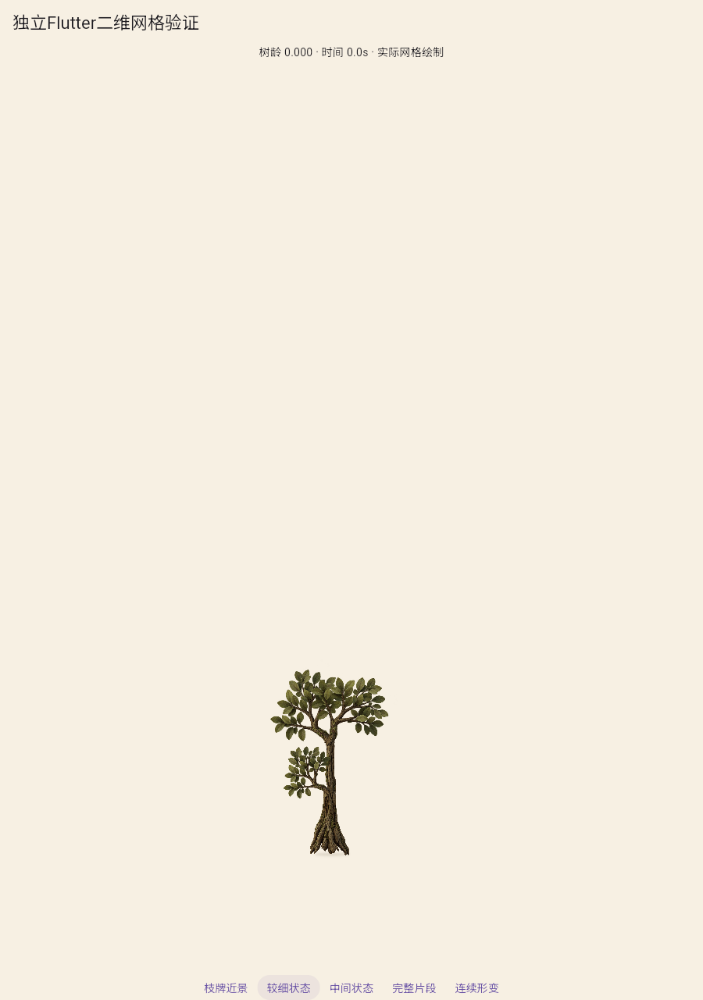
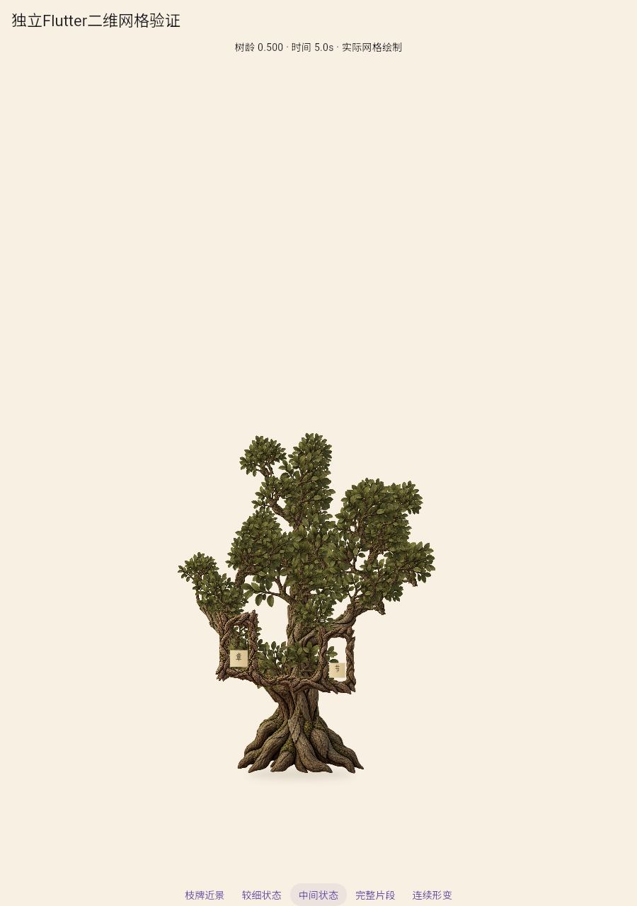
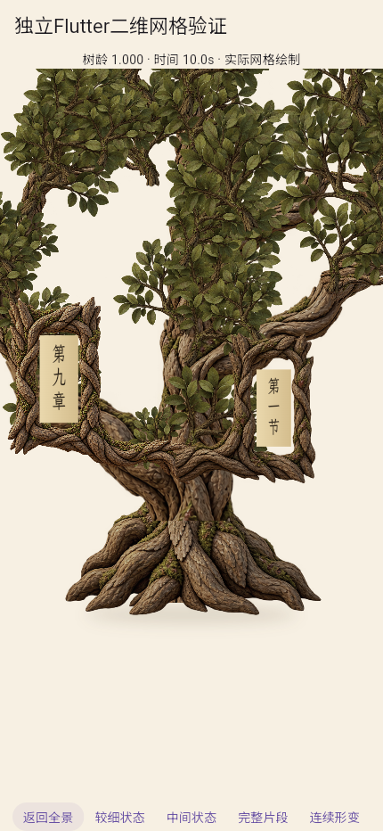
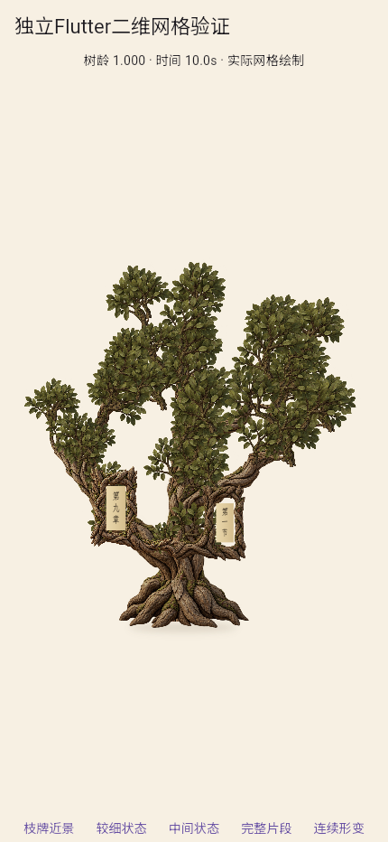

局部插画整树第二轮：整体未通过
构图、色调、纸面及开销改善；根颈横缝与重复多柱冠层仍不达参考。两轮上限已到，停止第三轮拼装调参，A2未通过。
 对照统一根颈体积、冠层层级与自然分叉。
对照统一根颈体积、冠层层级与自然分叉。

右冠完整入镜，但多柱冠层及根部接缝仍在。

保留早生叶，根影随根幅改变，仍有成年树皮痕迹。

纸面保持不透明展开，文字按纸面裁剪。

真实框角定位；根颈横向接缝在阅读尺度仍突出。

430×932浏览器视口，不是实体手机结论。
同一固定相机连续成长
101个实际Flutter网格状态、约10.1秒；编码10fps不是运行帧率。查看2.5秒、5秒及7.5秒的姿态过渡。
本轮运行与哈希 · 源资产 · 旧单纹理回归 · 文件及媒体复核 · 首轮对照 · 审查与方法重评